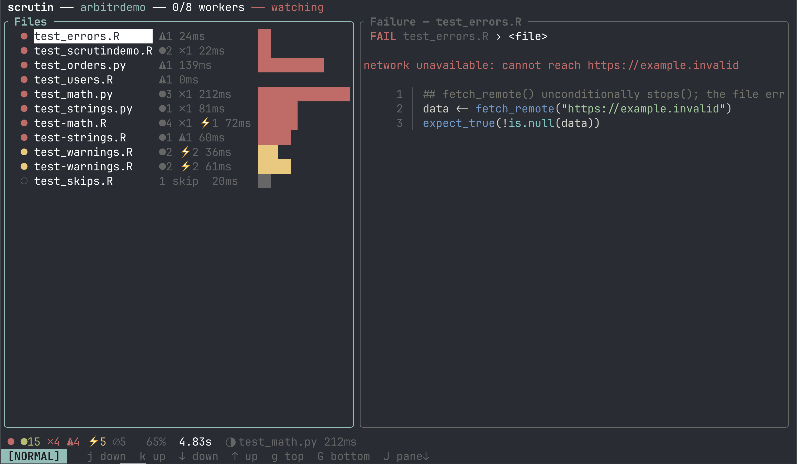
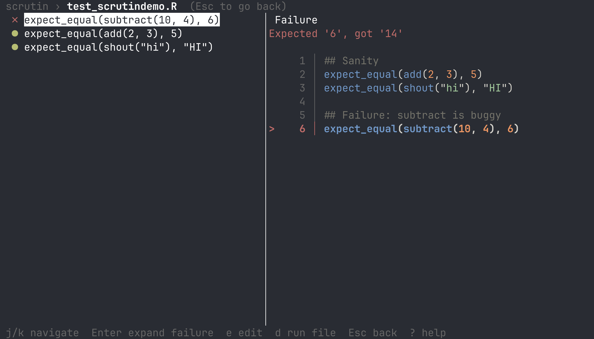

scrutin
Quality dashboard, file watcher, and parallel runner.¶
Scrutin discovers your R and Python unit tests, linters, and data validators automatically. It watches files for any edit you make, and uses dependency mapping to re-run only the checks that relate to your changes. The results are streamed live to a terminal UI, web browser dashboard, or into your editor.
See everything in one place¶
Every test, lint, and data validation result in a single dashboard. Filter by status, sort by name, time, or suite, and drill into failures to see expected vs. actual values with the failing line highlighted. Press e to jump straight into your editor.


What it runs¶
-
Unit tests
Run your test suites in isolated workers with live result streaming. Supports pytest, testthat, and tinytest.
-
Code quality
Lint checks run through the same pipeline as tests, with diagnostics mapped to warnings and fix actions exposed as keyboard shortcuts. Supports jarl (R linter) and ruff (Python linter).
-
Data validation
Data quality checks run alongside code quality checks with the same outcome taxonomy (pass/fail/warn/skip/error) and rerun logic. Supports pointblank (R), validate (R), and Great Expectations (Python).
Fast and focused¶
Re-run only what changed. Scrutin watches your project for file changes and uses dependency mapping to figure out which checks are affected. Edit a source file, and only the tests that depend on it re-run.
Parallel execution. Test files run concurrently across isolated workers. One crash never takes down the rest. Failing files are automatically retried to catch flaky tests.
R and Python side by side. Multiple tools can coexist in the same project. Scrutin detects each one automatically, runs them concurrently, and merges results into a single view.
Editor integrations¶
Ship it!¶
-
Easy to install
Install a single binary. Works on macOS, Linux, and Windows. Just make sure R or Python are available on your system.
-
Continuous integration
JUnit XML output for CI platforms. Exit code 0 or 1 for scripts. GitHub Actions annotations for inline comments on pull requests.
-
Run history
Every run is saved to a local DuckDB database. Track flaky tests, spot regressions, and compare run times across commits.